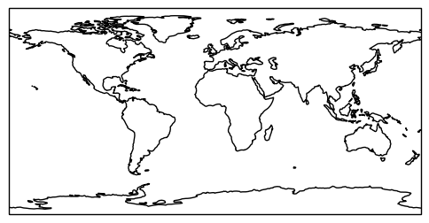
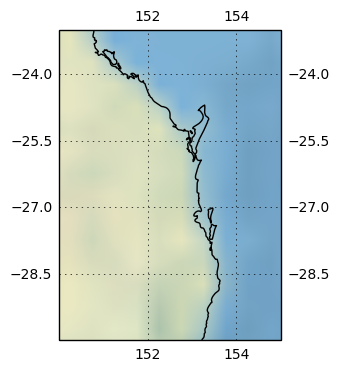
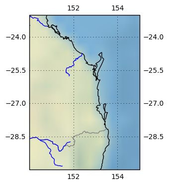

Introduction to Cartopy
Cartopy
Cartopy is a different style of beast than Basemap. With Basemap, you explicitly create a map object, and use the methods
exposed by that object to plot map-related data, or to translate lat/lons to Axes coordinates (depending upon the projection
you chose when the map was created). With cartopy, my mental model is that you tell Matplotlib that you want a Cartopy-aware
Axes object (by specifying a projection argument when the Axes is created). Subsequent operations on that Axes object invoke
Cartopy 'under-the-blanket'.
A small example:
ax = plt.axes(projection=ccrs.PlateCarree())
ax.coastlines()
plt.show()
yields a map that looks like:

And by the way, if you use Cartopy a lot, you will come to know and love the PlateCarree projection. I had never even heard of it by that name before, but I guess that using a French name adds that extra little bit of class!
Read about it here
So far, so like Basemap. One area where Cartopy shines for me, is in the support of raster mapping. As an example, I'll take a small area around where I live, and show how various images can be overlayed over the vector coastline data.
Cartopy comes with a 'stock image' that provides a soothing land/water visual indication; a bit fuzzy, but still nice to look at.
Bear in mind that I am zoomed in a long way, beyond the design parameters for stock_img(). I am plotting the coastlines at 1:10Million scale.
The code:
ax = plt.axes(projection=ccrs.PlateCarree())
ax.set_extent((150, 155, -30, -23))
ax.stock_img()
ax.coastlines(resolution='10m',)
ax.gridlines(draw_labels=True, xlocs=[150, 152, 154, 155])
plt.show()
gives us a map that looks like:

We can add some more vector data to overlay the stcok image by added the code below. Cartopy provides easy access to Natural Earth datasets.
Note the facecolor='none' in the definition of states_provinces; I just want to plot the borders of Queensland, not shade it a color.
# Create a feature for States/Admin 1 regions at 1:10m from Natural Earth
states_provinces = cfeature.NaturalEarthFeature(
category='cultural',
name='admin_1_states_provinces_lines',
scale='10m',
facecolor='none')
rivers = cfeature.NaturalEarthFeature(
category='physical',
name='rivers_lake_centerlines',
scale='10m',
facecolor='none')
ax.coastlines(resolution='10m',)
ax.add_feature(states_provinces, edgecolor='gray')
ax.add_feature(rivers, edgecolor='blue')
This gives us a map that looks like:

One small niggling worry is that I only specified the projection I am using once (by the projection=ccrs.PlateCarree() parameter
in the Axes creation). I don't know whether this only works because Natural Earth also uses PlateCarree as its default projection,
or if because Cartopy re-projects all the feature data under-the-hood. I plan to do some experiments in the future, but for my purposes,
PlateCarree is fine (I am zoomed in a long way).
In order to plot geo-data in all the current cultural context, Cartopy allows easy access to Open Street Map (OSM) tiles. The code below:
fig = plt.figure(figsize=(10,10))
imagery = OSM()
ax = plt.axes(projection=imagery.crs, )
ax.set_extent(( 153, 153.2, -26.6, -26.4))
# Add the imagery to the map.
zoom = 12
ax.add_image(imagery, zoom)
plt.title('Open Street Map and Cartopy')
plt.show()
gives us:

One point to note is the zoom parameter in the add_image() call. This sets the level of detail that OSM returns. I am sure that there
is an algorithm that determins the best value, given the extent of the map, but I too lazy to pursue to (I just experimented till I got
the right level of detail). The zoom parameter is not well documented in the Cartopy User Guide (in my opinion). If you set an OSM zoom too big,
you can't read the raster text; too small, and everything is fuzzy.
I'll wind this post up here, but there is more Cartopy goodness to come. Just for completeness, here are the imports for all the code above (and some code to come) (some are used only to support print-outs that define the environment for reproducibility purposes) :
# all imports should go here
import sys
import os
import subprocess
import datetime
import platform
import pandas as pd
import matplotlib.pyplot as plt
import cartopy.crs as ccrs
from cartopy.io.img_tiles import OSM
import cartopy.feature as cfeature
from cartopy.io import shapereader
from cartopy.io.img_tiles import StamenTerrain
from cartopy.io.img_tiles import GoogleTiles
from owslib.wmts import WebMapTileService
from matplotlib.path import Path
import matplotlib.patheffects as PathEffects
import matplotlib.patches as mpatches
import numpy as np
The notebook that has all the code is here